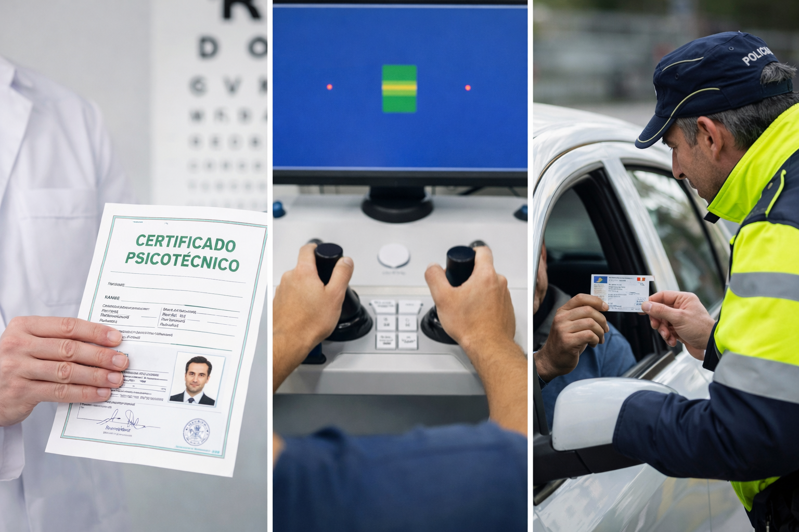

En el centro médico Emedical (San Fermín / Usera), estamos especializados en la realización de pruebas de aptitud psicofísica. Emitimos certificados médicos oficiales en el acto, con foto gratuita y gestión telemática inmediata.

Certificados médicos para la obtención y renovación de la Tarjeta de Identidad Profesional (TIP) para Vigilantes de Seguridad, Escoltas y Guardas Rurales. Ver detalles.
Realizamos el psicotécnico obligatorio para permisos de armas tipo B, D, E, F, caza y tiro deportivo. Pruebas visuales, auditivas y de coordinación en una sola visita. Ver detalles.
Si vas a adoptar o renovar la licencia de tenencia de un animal clasificado como PPP, emitimos el certificado de capacidad física y aptitud psicológica requerido por el Ayuntamiento. Ver detalles.
Revisiones médicas para la práctica de deporte federado, escolar o amateur. Verificamos el estado de salud general para prevenir riesgos durante la actividad física. Ver detalles.
Como centro médico autorizado (DGT M-0569), también gestionamos permisos de conducir. Para información sobre tasas y el servicio de tráfico, visita nuestra web principal: Renovación de Carnet de Conducir en Madrid.

Esta web cumple con el RGPD y no utiliza cookies. Lee la Política de Privacidad y los Avisos Legales.